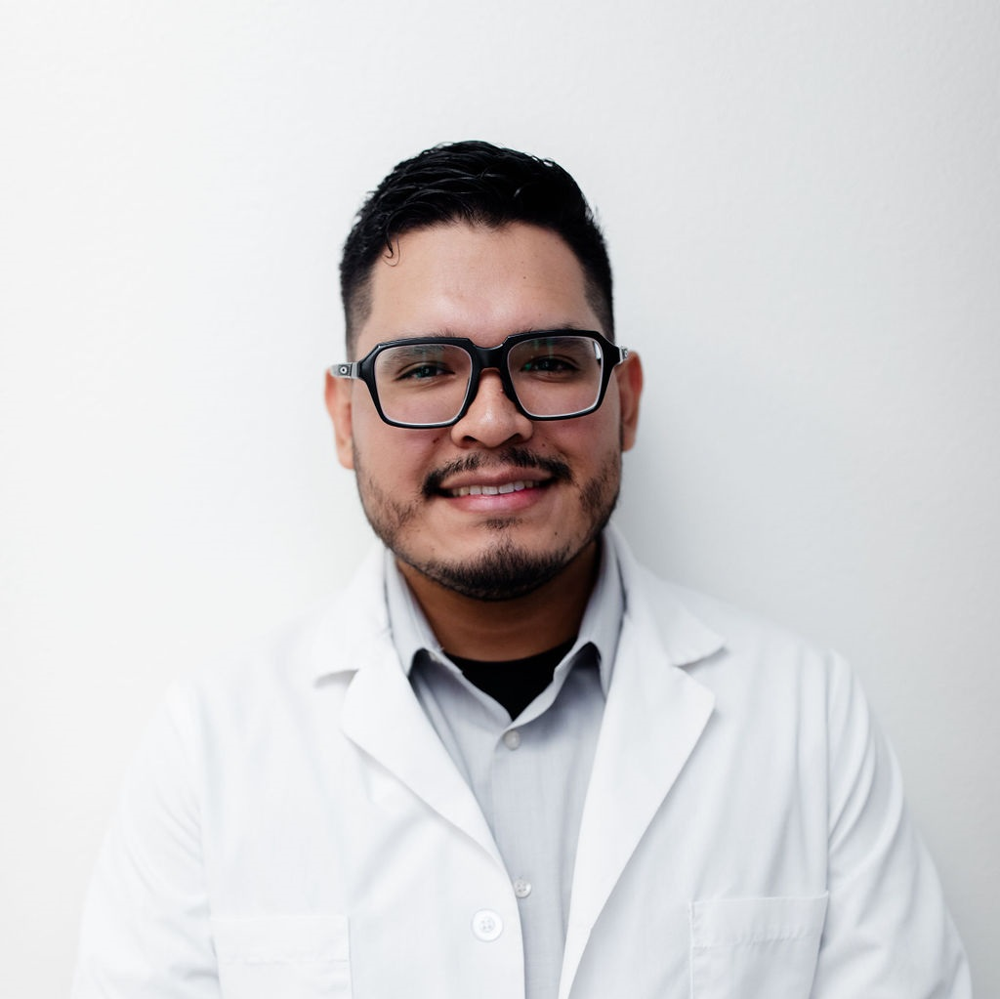

-

Dr. Adrian Ruiz, DDS.
A second generation dentist, DDS from the UCLA School of Dentistry in 1995, with over 22 years of practice experience.
-

Dr. Norma Miranda, DDS.
DDS from the UCLA School of Dentistry in 1976, with over 41 years of experience, building long term relationships with her patients.
-
Dr. Vivi Dang-Roberts.
A graduate of Loma Linda School of Dentistry in 1994, who is gentle, caring and compassionate.
-

Dr. Max Torres.
Born and raised in Las Vegas, and a UNLV graduate. He became interested in dentistry through the care he received from his dentists as a child.
-

Dr. Victoria Quizon, DMD.
Born and raised in Las Vegas, with a DMD from UNLV in 2023. An active member of the American Dental Association and the American Academy of Implant Dentistry.
-

Dr. Stephanie Andrade, DMD.
DMD from the UNLV School of Dental Medicine, fluent in Spanish, with a special interest in cosmetic and restorative dentistry.
-

Dr. Chris Schaudt.
Modern dentistry with a warm, personal approach, from routine cleanings through to smile makeovers.
-

Dr. Karthikeyan Subramani.
MSc in Orthodontics and Dentofacial Orthopedics, and holder of the Milo Hellman Award from the American Association of Orthodontists in 2019.
-

Dr. Omar Lavado, DMD.
Born in Lima, Peru and raised in Las Vegas, DMD from the UNLV School of Dental Medicine.
-
Dr. Andy Landaverde.
A first generation graduate, fluent in Spanish, whose goal is to build meaningful, trusting relationships with patients and staff.
Not sure who to ask for. Describe the problem and we will book you with the clinician who treats it. Contact